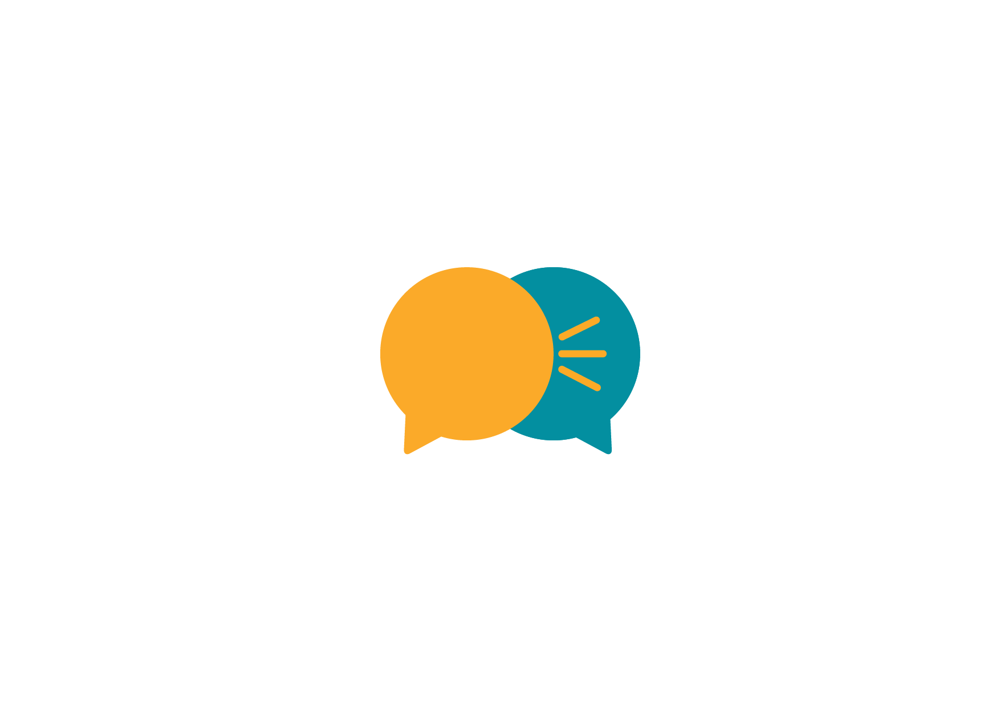
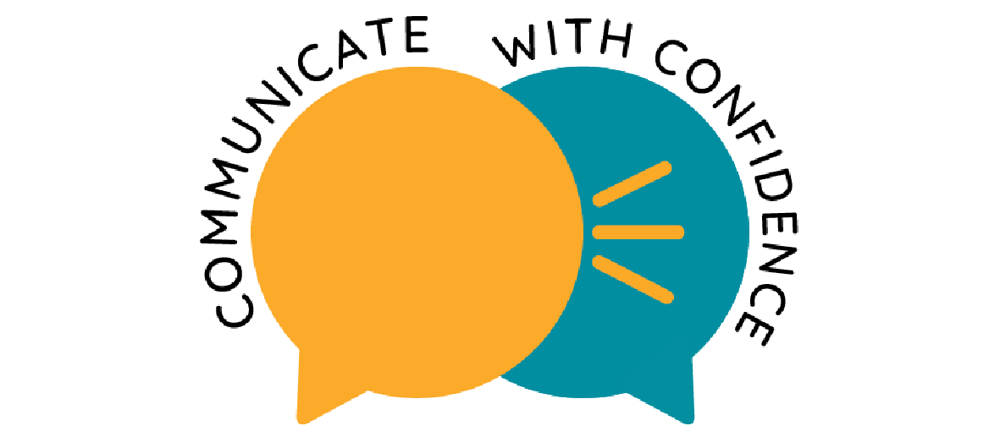
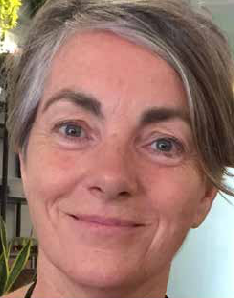
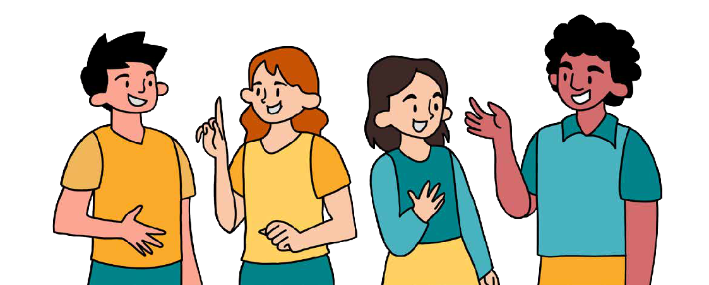
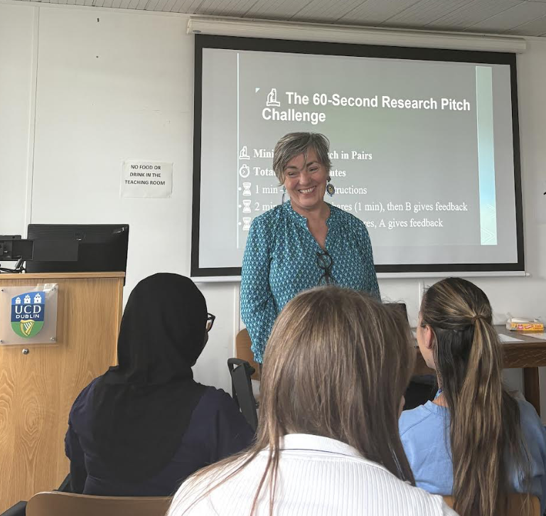

Workshops and one-to-one guidance to help you speak clearly, confidently, and authentically.
Get in touchWith over 20 years leading inclusive projects across Ireland and Southeast Asia, I bring together the precision of science and the energy of theatre to help people communicate with confidence, clarity, and presence. Communicate with Confidence is a 4-session course designed to equip students of all ages with essential communication and confidence-building skills. Using practical exercises and elements from performance training. This programme helps participants improve how they speak, listen, and engage — preparing them for interviews, presentations, exams, and life beyond the classroom.

Whether you’re preparing for work experience, oral exams, a presentation, or a job interview, strong communication skills offer a lifelong advantage. This course goes beyond “getting through” an interview or presentation — it helps students thrive by building self-awareness, resilience, and the ability to confidently represent themselves.
Interactive group sessions focused on real-world communication challenges.
Explore workshopsPersonalised sessions to build confidence and clarity at your own pace.


I offer a range of specialist workshops designed to help researchers and students communicate scientific ideas with confidence, clarity, and impact. Each workshop combines interactive exercises with practical skills training.
Description: This foundational workshop helps research students develop core communication skills to effectively present their scientific ideas, data, and research outcomes to both specialist and non-specialist audiences. Using practical exercises, participants will learn how to structure their message, use clear and engaging language, and control tone and pace for maximum clarity and impact.
Students preparing for group meetings, thesis presentations, or conference sessions.
Description: Designed for students preparing for oral or poster presentations, this workshop focuses on intentional design and confident delivery. From opening lines to handling questions, participants will be guided through the structure and delivery of a compelling scientific presentation, including how to engage an audience and stay calm under pressure.
Students about to present at conferences, research symposiums, or group seminars.
Description: This immersive workshop goes beyond traditional presentation training. It explores the human side of scientific communication — how to use storytelling, emotion, and authentic presence to connect with diverse audiences. Ideal for those seeking to increase public engagement or science outreach.
Students interested in public engagement, media communication, or science advocacy.
“Before working with Theresa, I often felt hijacked by my nervous system in high-stakes meetings—flustered, overwhelmed, and unable to communicate effectively when it mattered most. Theresa’s coaching was a game-changer. She combined neuroscience tools, practical strategies, and even acting techniques in a way that felt innovative, engaging, and tailored to me. The acting element was especially powerful, helping me embody new ways of showing up under pressure. Now, instead of being overwhelmed, I have a clear toolkit that keeps me grounded and confident in crucial conversations. If you struggle with communication blocks, Theresa’s unique, mind-body approach creates real and lasting transformation.” – Smaranda Maier, Founder of Authentic Health
“Ms Theresa played a pivotal role in building my confidence beyond school. Thanks to her guidance, I delivered a speech to 1,300 people at university with poise and received fantastic feedback.” – Shre Kishan Manohar, UCSI University, Kuala Lumpur, Malaysia
Email: theresaleahy.cwc@gmail.com